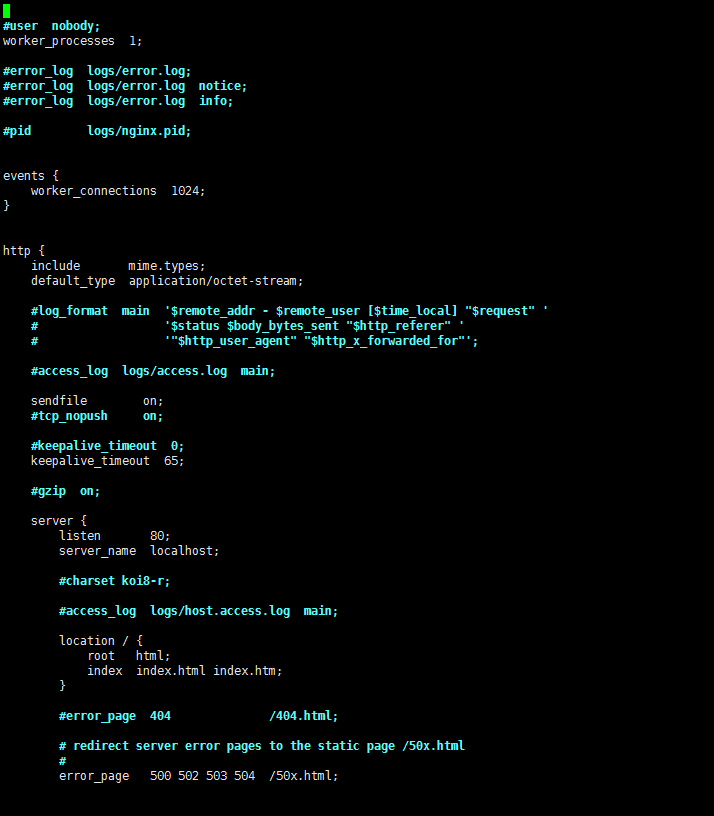

Nginx 配置参数详解
默认配置文件在 nginx 目录下的 conf/nginx.conf 内容大概如下：

所有我就把它分为 全局配置、events 、http 吧
一、全局区配置
# 运行用户与用户组，用户组可忽略 |
二、events 事件相关的配置
events { |
三、http 服务器配置
http { |
proxy.conf
# 后端的服务器可以通过X-Forwarded-For获取用户真实IP |
fastcgi.conf
fastcgi_param SCRIPT_FILENAME $document_root$fastcgi_script_name; |
四、其他补充
1、查看Nginx状态
|
2、防盗链
location ~* \.(jpg|gif|jpeg|png)$ { |
3、rewrite 重定向，限制IE访问
# 若是ie 浏览器，将重定向到ie.html |
4、限制ip访问
location /{ |
参考自：https://www.nginx.com/resources/wiki/start/topics/examples/full/